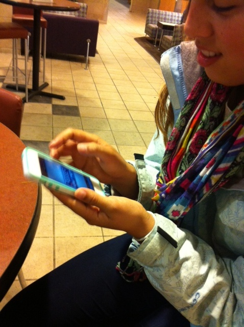
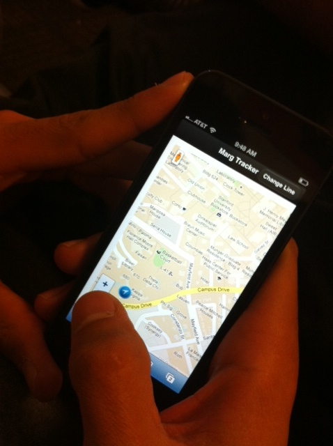
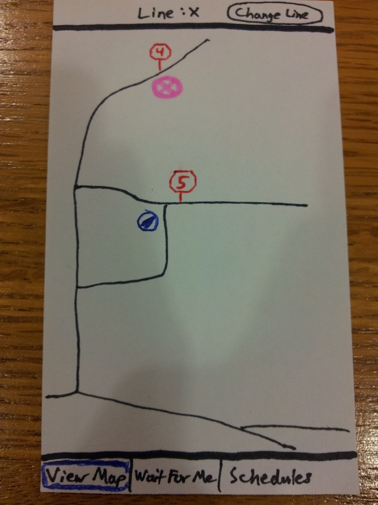

Assignment 8, Example 2
In-person Testing
People noted they wanted the ability to move around the app after sending the request.

Here someone is checking out newly redesigned schedules page.

Here the person did not know which bus line they were looking at.
List of Changes
- Redesign schedules page (current formatting is not that good, some times spill into next line...already implemented this week)
- Clicking on the bus brings up information (people kept clicking on buses thinking that something will happen...already implemented this week)
- Ability to see which direction the bus is going (requested by participants...decided to implement this week as part of our redesign)
- Ability to see which bus line you are looking at on map screen (requested by participants...already implemented this week)
- Provide information about how long bus driver will wait (requested by participants...already implemented)
- Fix shopping express (was broken, noted by TA in last assignment...already implemented this week)
- Ability to move around the app after sending wait request (requested by people, not sure if we can implement this yet)
- Remove ability to click away from the popup that forces you to choose a line on your first visit (if you do this, then no line will be chosen and the app will break)
Paper Prototype Redesign
This is a prototype of the old design (we made one to emphasize the differences between our designs).
This is a prototype of the redesign. We changed the blue bus stop icons to red, numbered, stop signs (in order of the bus line path) and the bus icon now has the name of the line and the color of the line (from the Marguerite website/signs).

Online Test Plan
For our online test, our main goal is to see how users interact with the icons on the Google map. We have set up a version where the bus stops and bus icons are not labeled, and a version where those icons are labeled. We will measure the number of times the icons are clicked. If the count is high, that means the icons are clear enough to draw users to click and find out more information about them. If the count is low, then that means other parts of the app, such as the schedules page and wait request, are drawing more attention.
{kind=link}
{kind=link}
{kind=link}
{kind=link}
{kind=link}
{kind=link}
{kind=link}